Thank You For…
An interactive gratitude wall for the Kindness Gallery at the Children’s Museum of Pittsburgh. Children pick blocks for a person, what that person did, and how it made them feel, then receive an award sticker.
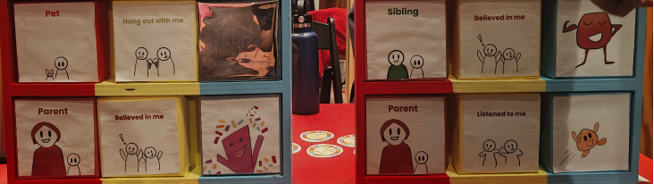
Summary
- Context
- Learning in Museums, a Carnegie Mellon University HCI course project for the Children’s Museum of Pittsburgh
- Team
- Libby Egan, Jillian Haguisan, Hales Wilson, and me
- What I did
- Ideation, concept art, laser cutting, fabrication, 2D art, and playtest data collection
- Methods
- Observation (behavior and talk), open-ended notes, a short post-experience form, and photo documentation
- Participants
- 10 children (ages 0–5 and 6–10), each with an accompanying adult
- Setting
- Children’s Museum tent at CMU’s Spring Carnival
Key findings
- Age shaped the experience. Children (6–10) chose blocks quickly, asked questions out loud, and 5 thanked us at the end. Young children (0–5) were mostly nonverbal, hesitated, and needed help from a facilitator or parent.
- Caregivers helped children finish, but often shifted their answers.
- Some block labels did not work. “Guardian” and “Relative” were never chosen, and most feeling blocks were justified as happiness.
- The sample is small (N=10), so these are directions for the next iteration, not conclusions.
Design brief
Develop a portable, family-friendly exhibit setup that engages children and their caregivers in activities that foster contemplation, conversations, behaviors and practices that unpack a social-emotional learning (SEL) skill area.
Exhibit description
Thank You For… explores how children can practice gratitude by recognizing how acts of service support them and show care, while connecting these experiences to how kindness makes them feel and inspires them to treat others with kindness. Let’s celebrate the people who choose kindness and learn how we can share it with others!
Early research: Squishy Topics conversations
Activity: Make an award!
Children were asked to pick an adjective that best described themselves or someone else. They were
then prompted to draw anything that represented themselves or someone else embodying that adjective.
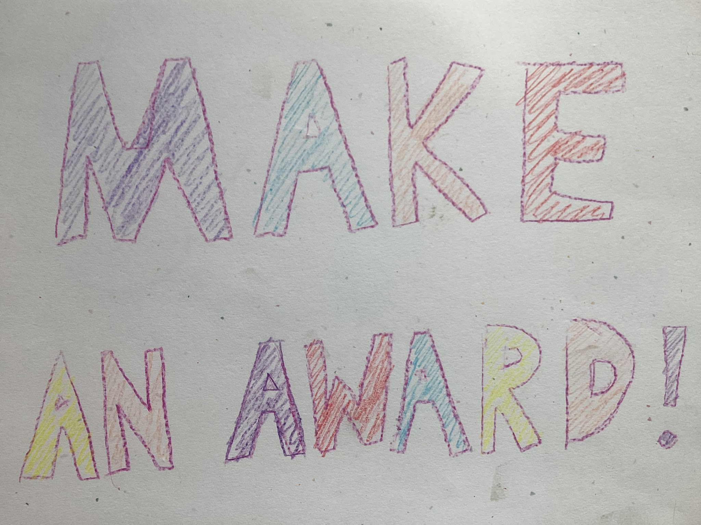
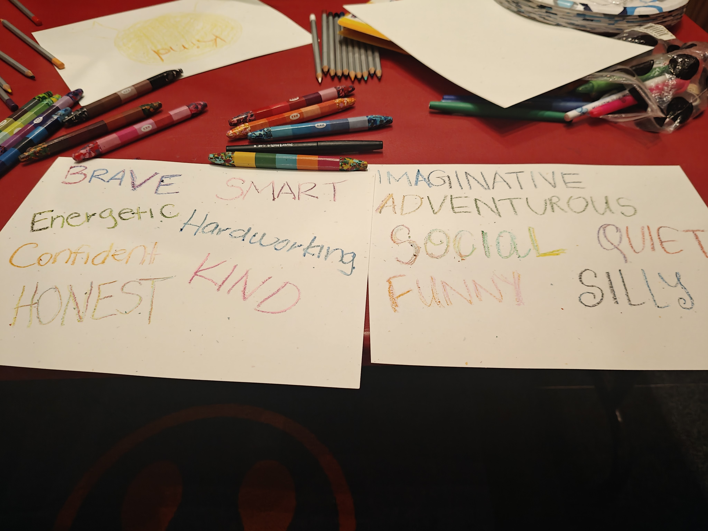
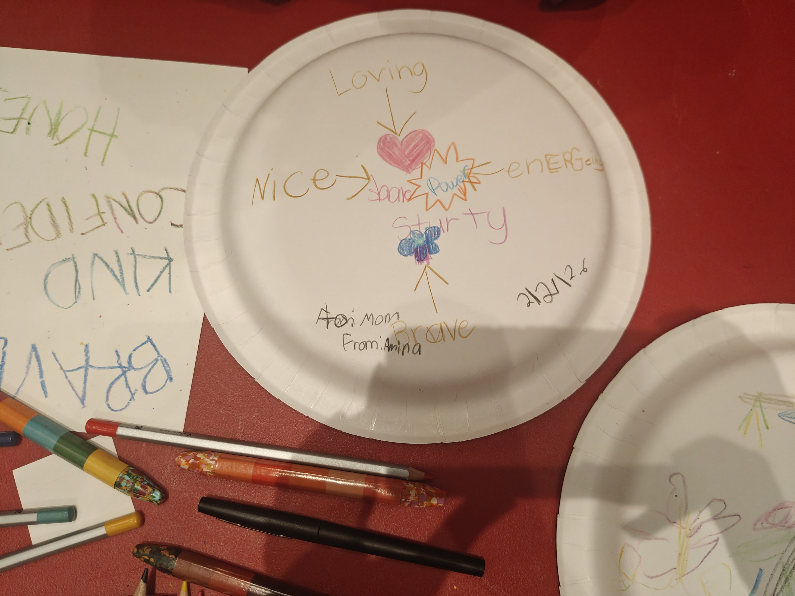
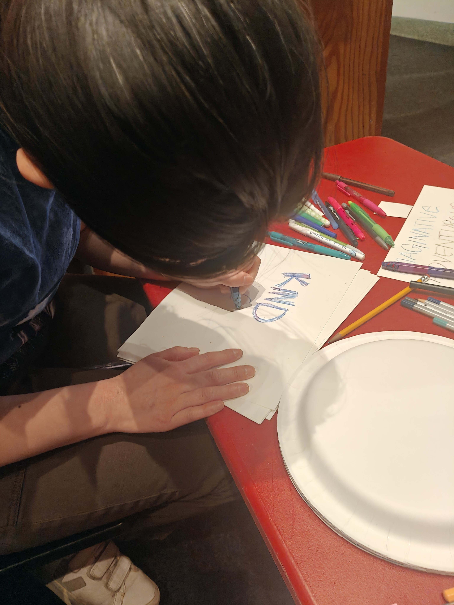
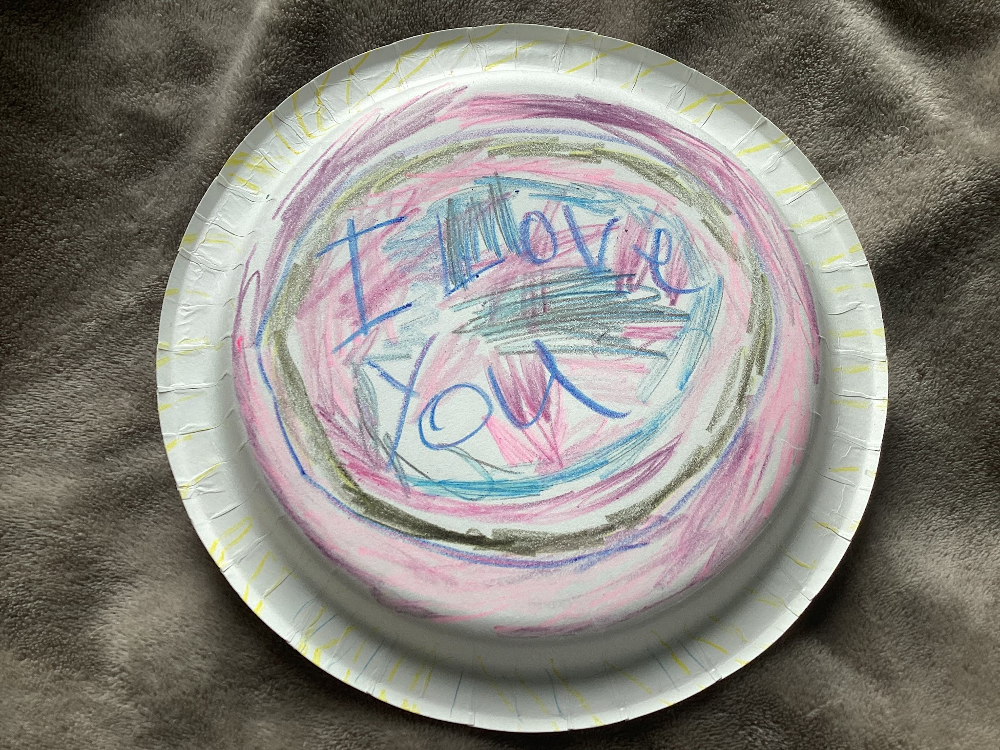
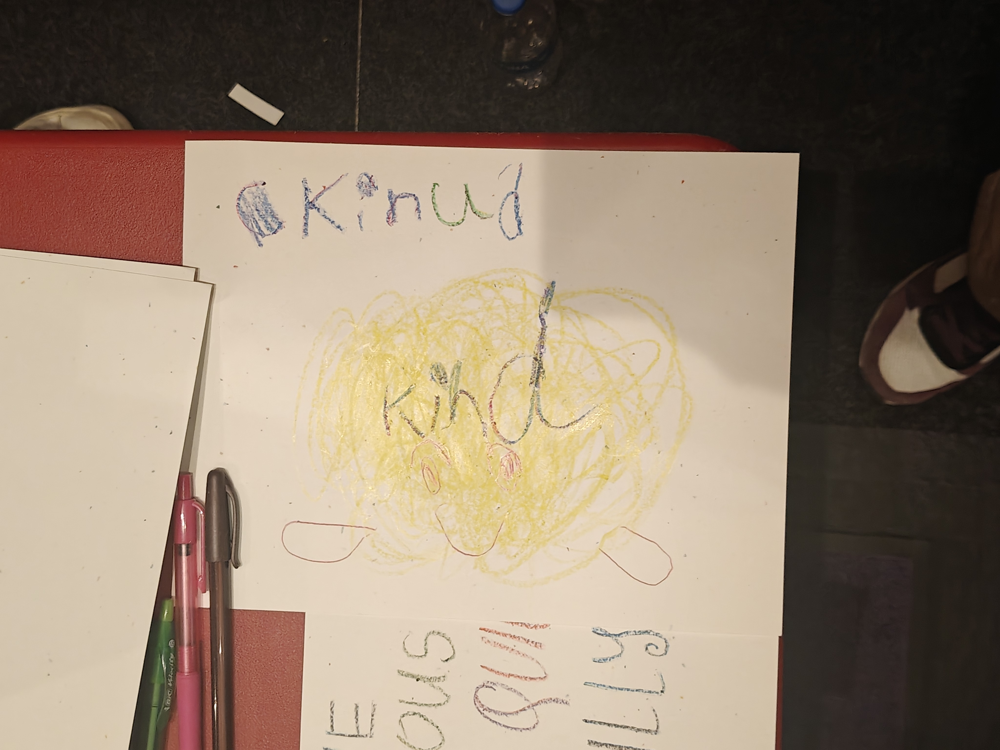
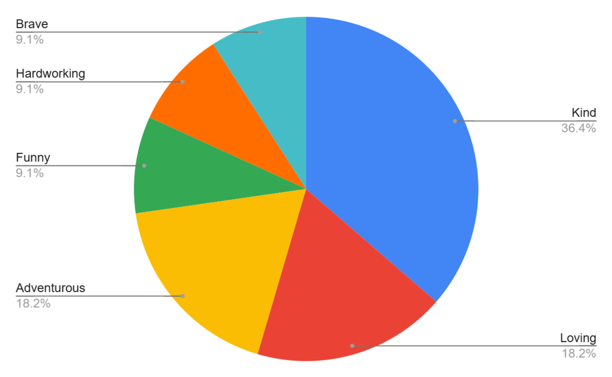
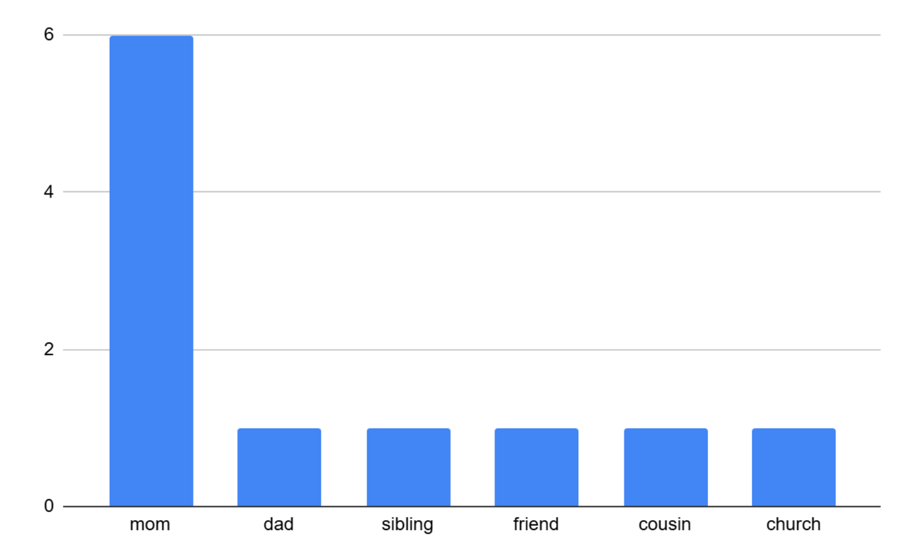
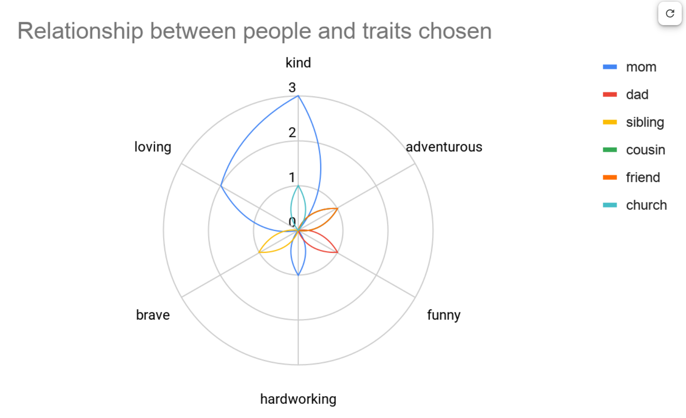
Formative evaluation
Study objectives
This evaluation continued to test whether the experience helps children connect the acts of service others do for them to gratitude, and whether it helps them recognize how kind actions affect them and how they can pass the kindness along. After our previous playtest we knew where the project had room to improve, so we used that feedback to strengthen our questions and data collection.
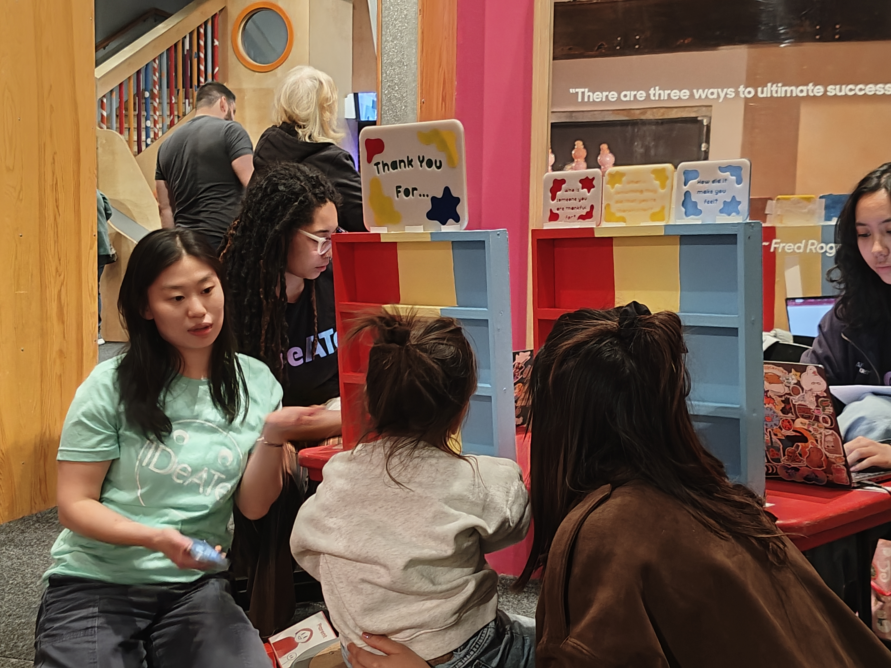
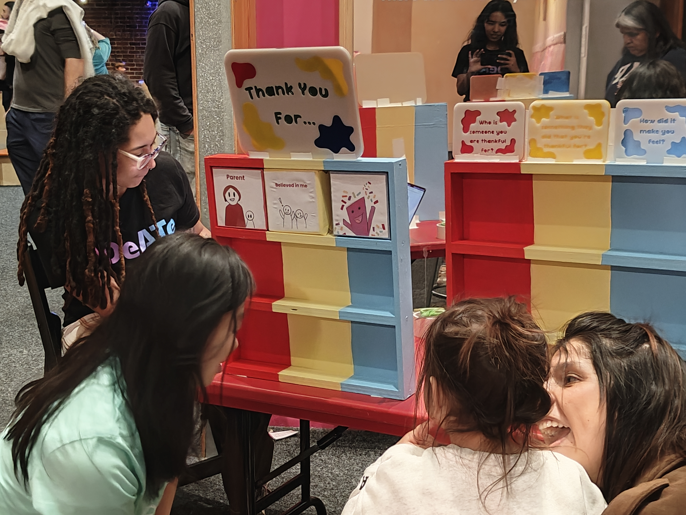
Guiding research questions
| SEL research question | What counts as evidence (indicators) | How data was collected |
|---|---|---|
| Are visitors able to identify or recognize something someone has done for them that they’re thankful for? | The visitor can answer “What have they done that you’re thankful for?” without further probing or facilitation. |
|
| Are visitors able to express how they feel about those actions? | The visitor can answer “How does that make you feel?” without further probing or facilitation. |
|
| Did the visitor express gratitude toward those actions? |
|
|
| Did visitors understand what to do without the facilitator? |
|
|
| Where do visitors get confused? |
|
|
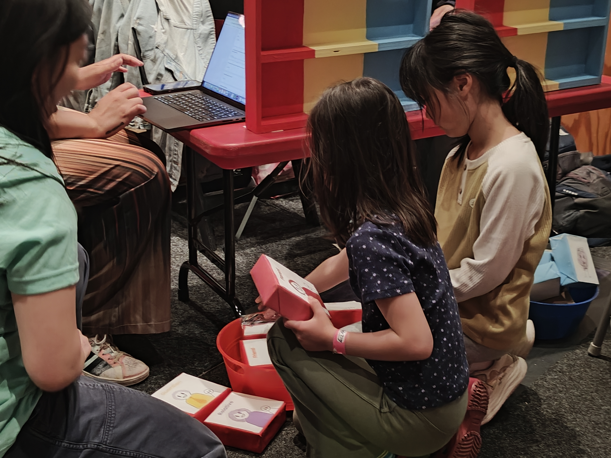
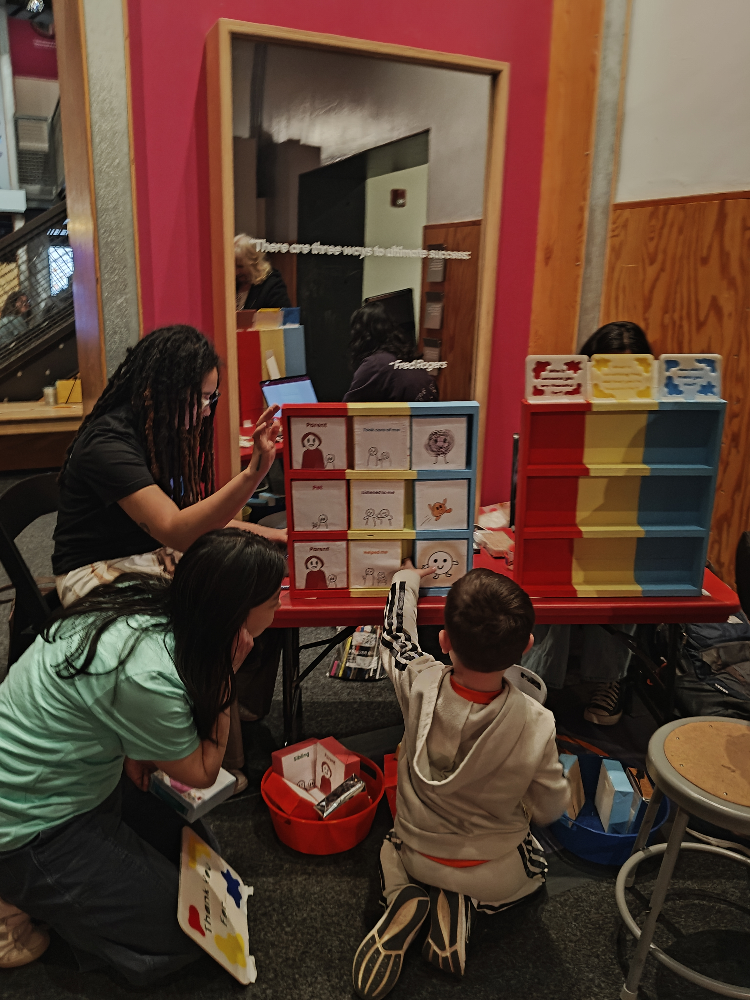
Data collection plan: four study roles
Four team members each took one role during every session, so one person watched behavior, one listened to talk, and the exhibit still ran smoothly.
| Role | What they did | Format |
|---|---|---|
| 1. Facilitator | Welcomed visitors, asked permission to take notes and photos, and prompted them through the exhibit | Scripted prompts |
| 2. Observer (behavior focus) | Watched what people do, where their attention goes, where they struggle, and how long they stay | Written notes, open-ended |
| 3. Listener (talk focus) | Listened for what visitors say and ask, learning talk about the SEL topic, and personal connections | Google Form, plus photos |
| 4. Technician / operations | Ran the technical side of the awards, asked a few closing questions, and wrapped up the experience | Google Form, filled in on the participant’s behalf |
- Behavioral: observational written notes.
- Visual and auditory: photographic records and detailed notes on visitor dialogue (Role 3).
Role 1 – Facilitator script
Introduction
“Welcome to our experience! We are students from Carnegie Mellon University testing class project ideas for Children’s Museum of Pittsburgh about emotions.”
“Also before we get you started is it ok if we note any observations we have as you interact with the experience?”
“Also would it be ok if we took photos to help document our project?”
Initiate exhibit
“Can you think of a special person in your life?”
“What is something they did that you remember?”
“How did it make you feel?”
“Why did you pick that block/response?”
For adults (the “why”)
The goal of this project is to help children practice gratitude by recognizing how acts of service support them and show care, while connecting these experiences to how kindness makes them feel and inspires them to treat others with kindness.
Role 2 – Observer prompts
Format: written notes, open-ended
Observe and write down:
- What do people do?
- Where is their attention? Do parents and children focus on different things?
- Do visitors struggle to figure out what to do? What seems to cause this?
- Are instructions clear and intuitive? When does the facilitator step in?
- Do visitors have difficulty using parts of the exhibit?
- How long do they stay? Why do they leave?
Role 3 – Listener prompts
Format: Google Form
Listen for, record, and photograph:
- What are visitors saying, and to whom?
- What questions do they ask (to you or each other)?
- Do you hear any learning talk or discussion about your SEL topic?
- Do people make personal connections or references?
Role 4 – Technician / operations script
Running the technical aspects of the awards and concluding the experience.
“Would you mind answering a few questions before you head out?”
(Fill out the Google Form link on behalf of the participant.)
“Thanks so much for taking the time to try out our experience!”
Participants and setting
We playtested in the Children’s Museum tent during CMU’s Spring Carnival. Before starting, facilitators asked each family for permission to take notes and photos.
- Total number of participants: N = 10
- All 10 participants were accompanied by an adult, who observed or facilitated but did not take part
in the exhibit
- 4 of 10 participants were also accompanied by another child (friend or sibling)
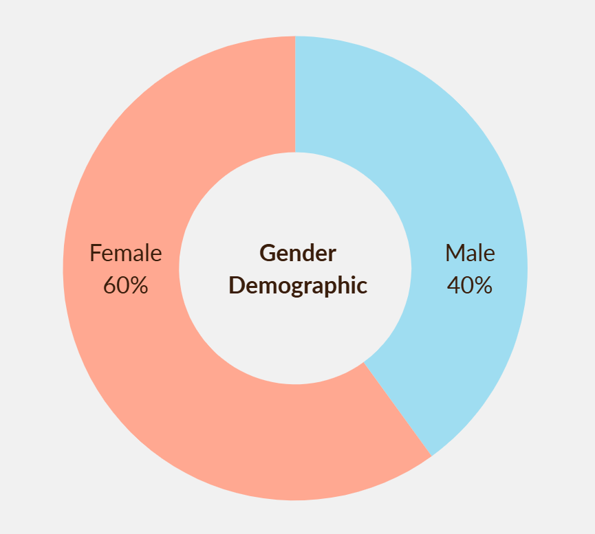
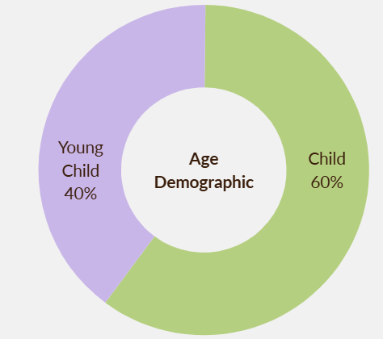


Findings
Overall data
Participant IDs read number, age group (YC = young children 0–5, C = children 6–10), and M/F. The charts below show the responses from all participants. Some participants completed the activity multiple times, and all of their attempts are included. Three participants (#3-YC-F, #7-YC-M, and #9-YC-M) did not fully complete the exhibit or left some questions blank. One “What did they do?” response was missed during observation.
| Who is someone you’re thankful for? | What did they do that you’re thankful for? | How did it make you feel? |
|---|---|---|
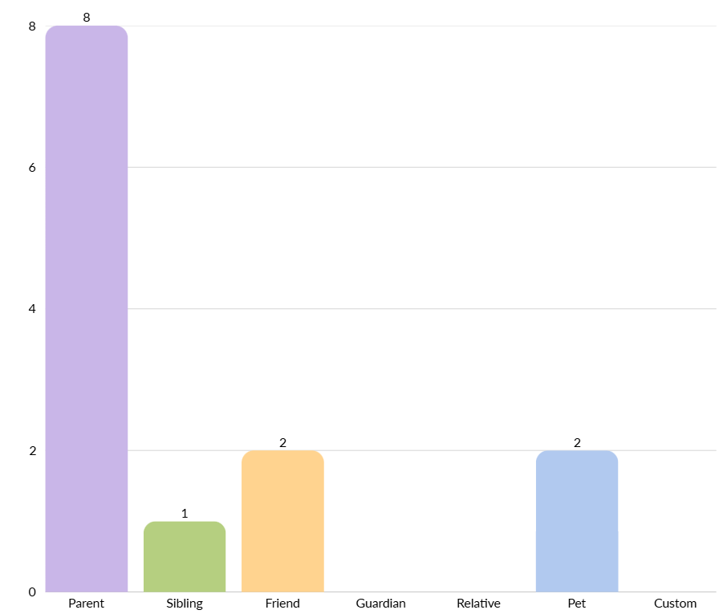 |
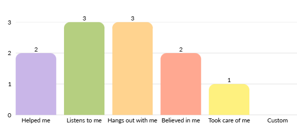 |
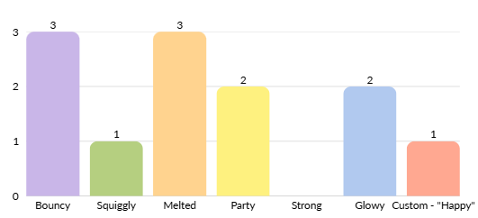 |
Behavior data coding
| Theme | Patterns | Data collection method |
|---|---|---|
| Engagement |
|
|
| Confusion |
|
|
Young children (0–5) findings
- 3 participants fully completed the exhibit at least once
- #7-YC-M left before completing “Feeling”
- #9-YC-F left before completing “Person” and “Action” on the 2nd try
- All participants were mostly nonverbal
- All participants displayed hesitation and needed facilitator or parent help
- 2 participants answered questions out of order
- Gratitude was not observed from any participants
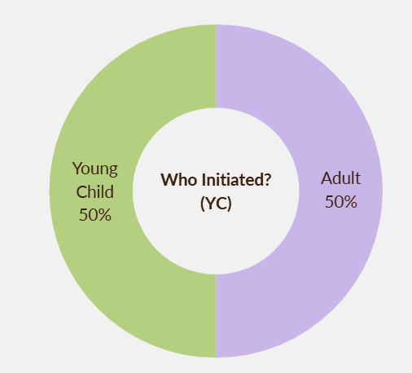
| Who is someone you’re thankful for? | What did they do that you’re thankful for? | How did it make you feel? |
|---|---|---|
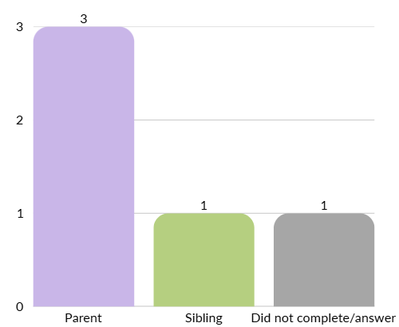 |
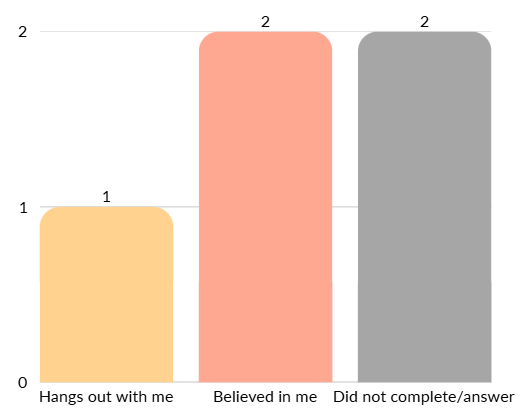 |
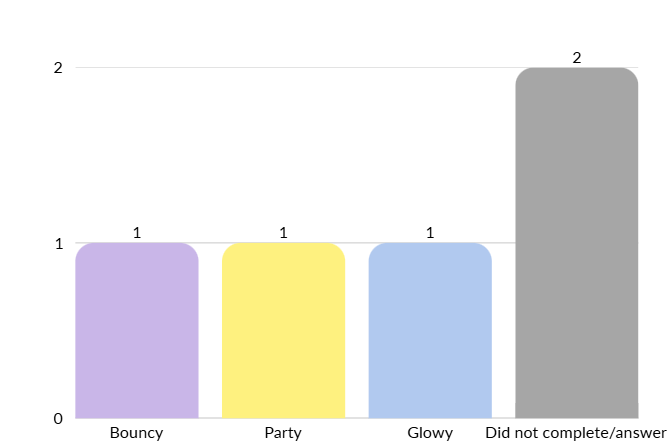 |
Children (6–10) findings
- 6 participants fully completed the exhibit at least once
- #4-C-M completed the exhibit 3 times
- #10-C-M completed the exhibit 2 times
- 4 participants chose blocks immediately
- 2 participants asked for clarification
- #4-C-M asked “What is this?” about the reflective and feeling blocks
- Participants were generally more talkative than young children
- 2 participants answered questions out of order
- 5 participants thanked us at the end of the exhibit
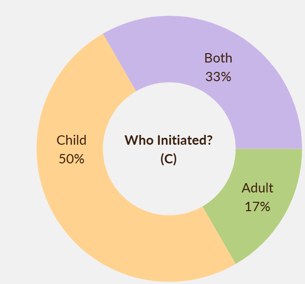
| Who is someone you’re thankful for? | What did they do that you’re thankful for? | How did it make you feel? |
|---|---|---|
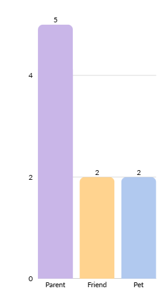 |
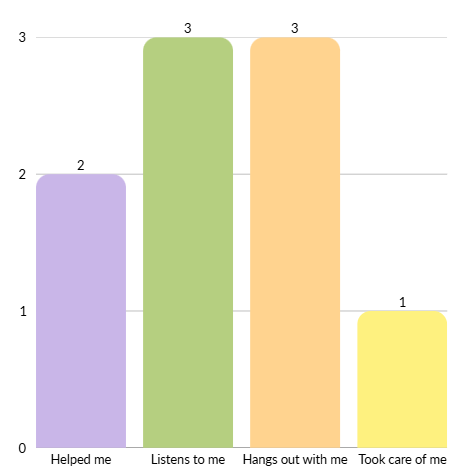 |
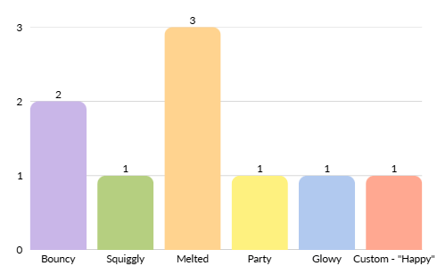 |
Notable observations
| Gratitude behaviors | Confusion behaviors |
|---|---|
| #4-C-M displayed strong gratitude and gave the facilitator a hug upon receiving the award sticker. | #10-C-M asked “What do you do after this?” after placing the person block.
|
#3-YC-F reached out for the award stickers and said “I want thank you.” She then gave it
to her dad.
|
#4-C-M asked “What is this?” about the reflective blocks and feeling blocks.
|

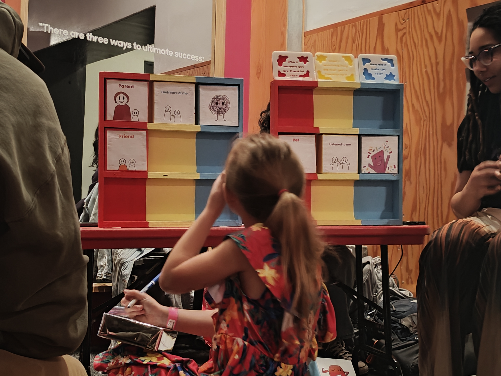
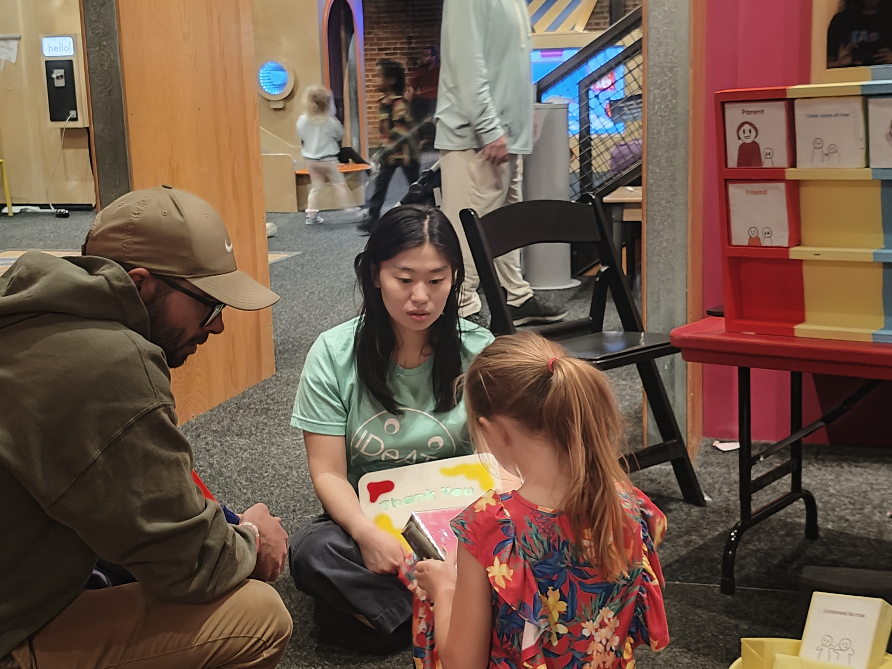

Summary of findings
Children understood and completed the activity more readily than young children
Evidence: every young child hesitated and needed facilitator or parent help; among children, 4 chose blocks immediately and 6 completed the exhibit at least once.
Children were more vocal when confused or curious
Evidence: 2 children asked for clarification, including #4-C-M asking “What is this?” about the reflective and feeling blocks.
Young children were mostly nonverbal, and facilitation did not reliably improve completion
Evidence: all needed facilitator or parent help, yet #7-YC-M still left before completing “Feeling.”
All participants could identify someone they were thankful for
Children expressed gratitude more readily than young children
Evidence: 5 children thanked us at the end; among young children, #3-YC-F’s “I want thank you” was the closest sign.
Caregiver guidance improved completion but often shifted responses
Evidence: accompanying adults often acted as facilitators when a child was confused or couldn’t read.
Content and usability issues
Accompanying adults would often act as facilitators if the child was confused or couldn’t read.
#7-YC-M started the exhibit, but walked away when he saw that one of the shelves was full (even though the other shelf had empty rows).
Some participants struggled to place the blocks in the shelves, and we had to hold the shelves down as they put them in.
We occasionally had to reset the blocks if the shelves were full, or if the blocks were scattered on the floor and not in the baskets.
Limitations and design implications
Small sample
Our sample size of N=10 is relatively small and may not be representative of the general public.
Visual design skewed young
The prime colors and simplistic appearance seemed to attract children too young for the activity and discourage the targeted age group. This made many of our observations with young children rely heavily on facilitation.
This could push us to research design elements that are equally appealing to older kids but accessible to younger children as well.
Block vocabulary
The “Guardian” and “Relative” blocks were never used, possibly because they sounded too legal-jargon for children. There needs to be a balance between blocks being specific and general.
Feelings
Most of the feeling blocks were justified because they represented happiness, suggesting kids still struggled to associate gratitude with more complex feelings.
Recommendations for the Children’s Museum of Pittsburgh
What worked
Letting children respond with physical blocks applied the museum’s Play with Real Stuff design philosophy, and children engaged with them: some looked through every option and some created custom blocks.
Give visitors more agency
More engagement is needed to deepen socio-emotional learning, and we believe visitors should have more agency instead of being facilitated through the entire exhibit.
- Display the award stickers on the wall for visitors to see, using a projector or a dedicated display screen.
Make it more inclusive
- The exhibit relies on some physical ability because visitors have to pick up and place blocks. Add other ways to respond to the questions, such as pressing a button or recording a response.
- The blocks use very generalized cartoon characters for easier prototyping. Expand them to be more diverse, and add accessibility features such as braille.
Scale the experience for older children
- Refine the visual aesthetics and make the difficulty level scalable across age ranges.
- Add optional challenges and prompts that give older children more chances to demonstrate the developmental milestones they resonate with.
- Continue developing the storytelling to brainstorm meaningful and relatable actions, choices, and consequences. These could be framed around gratitude, or go broader to the impact people’s actions have on each other.
- Together, these continue to support the primary objective: helping children build self and social awareness so they understand that their actions and words make an impact.
Design and fabrication process
Concept iterations
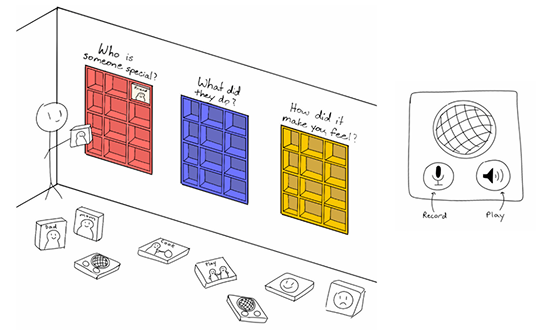
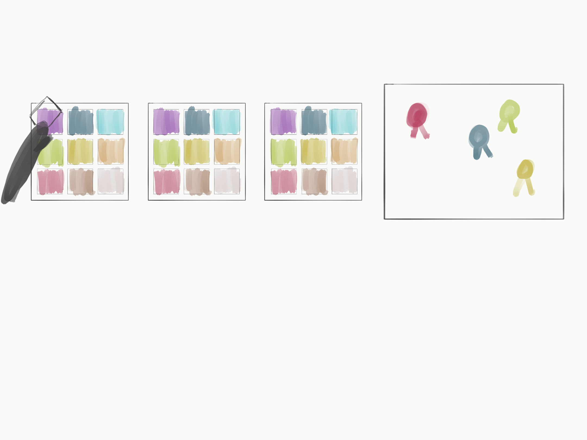
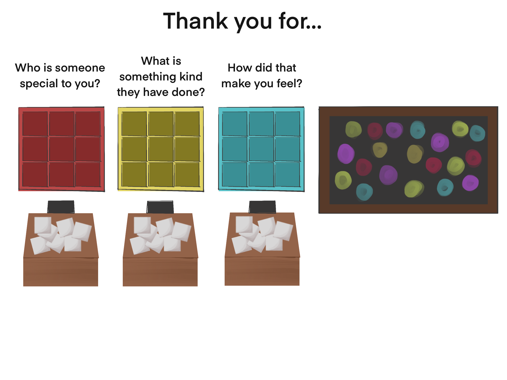
Experience map
Storyboards and experience journey maps.
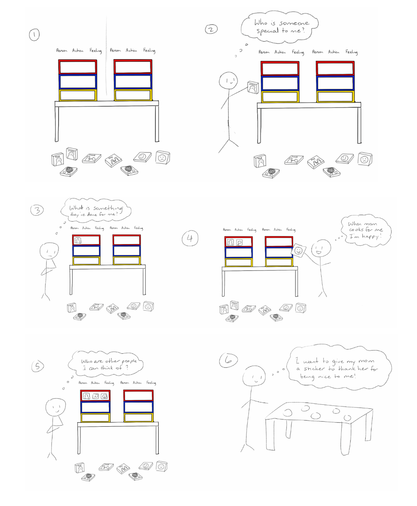

The built exhibit
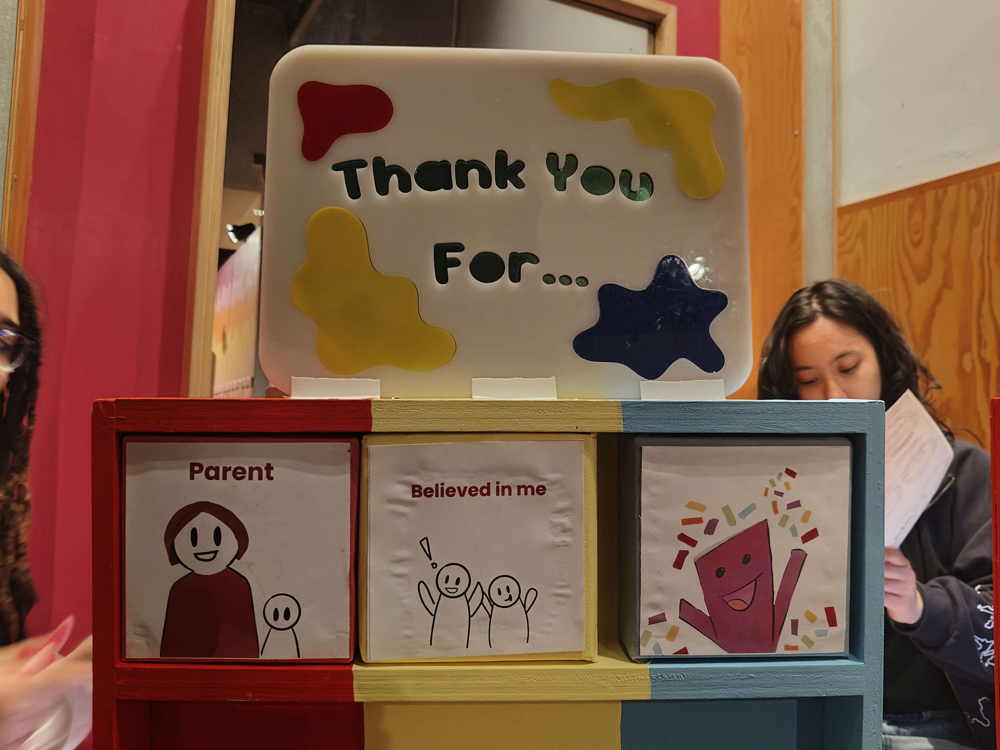
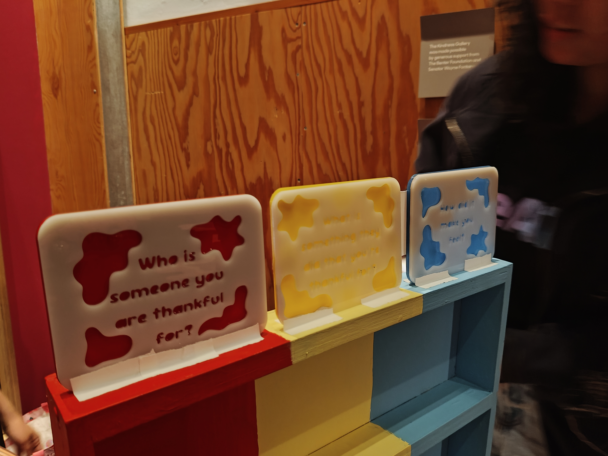
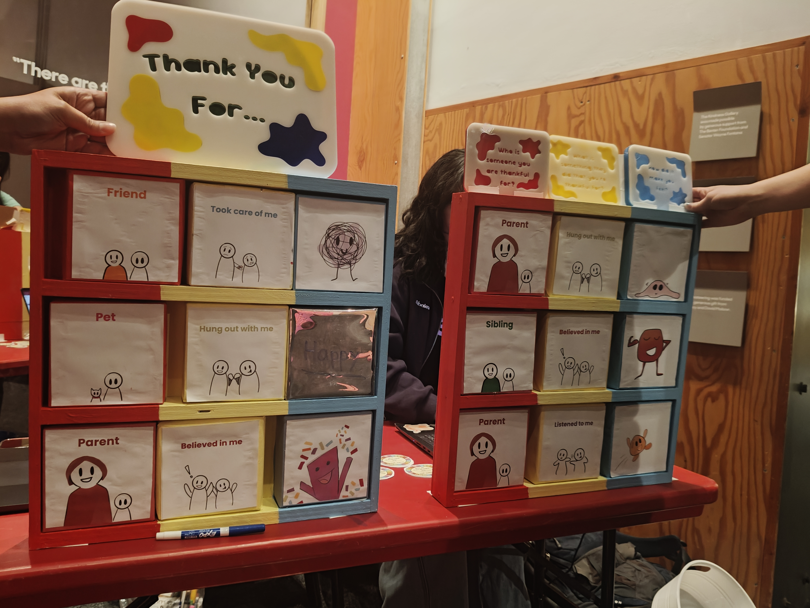
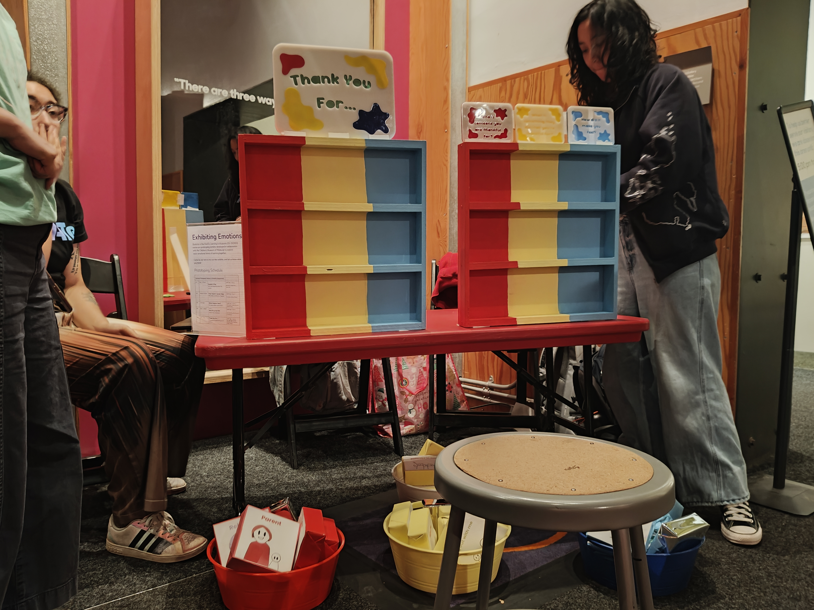


Team
Libby Egan, Jillian Haguisan, Hales Wilson